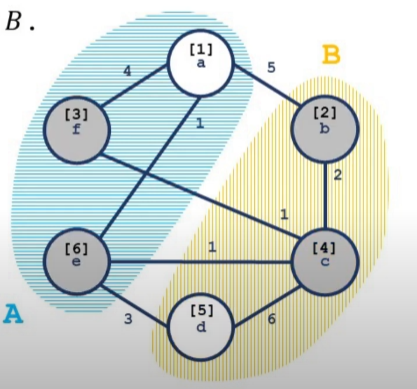

Stoer wagner
定义
由于取消了 源汇点 的定义，我们需要对 割 的概念进行重定义．
（其实是网络流部分有关割的定义与维基百科不符，只是由于一般接触到的割都是「有源汇的最小割问题」，因此这个概念也就约定俗成了．）
割
去掉其中所有边能使一张网络流图不再连通（即分成两个子图）的边集称为图的割．
即：在无向图 $G = (V, E)$ 中，设 $C$ 为图 $G$ 中一些弧的集合，若从 $G$ 中删去 $C$ 中的所有弧能使图 $G$ 不是连通图，称 $C$ 图 $G$ 的一个割．
有源汇点的最小割问题
同 最小割 中的定义．
无源汇点的最小割问题
包含的弧的权和最小的割．也称为全局最小割．
显然，直接跑网络流的复杂度是行不通的．
Stoer–Wagner 算法
引入
Stoer–Wagner 算法在 1995 年由Mechthild Stoer与Frank Wagner提出，是一种通过 递归 的方式来解决 无向正权图 上的全局最小割问题的算法．
性质
算法复杂度 $O(|V||E| + |V|^{2}\log|V|)$ 一般可近似看作 $O(|V|^3)$．
它的实现基于以下基本事实：设图 $G$ 中有任意两点 $S, T$．那么任意一个图 $G$ 的割 $C$，或者有 $S, T$ 在同一连通块中，或者有 $C$ 是一个 ${S-T}$ 割．
过程
- 在图 $G$ 中任意指定两点 $s, t$，并且以这两点作为源汇点求出图 $G$ 的 $S-T$ 最小割（定义为cut of phase），更新当前答案．
- 「合并」点 $s, t$，如果图 $G$ 中 $|V|$ 大于 $1$，则回到第一步．
- 输出所有cut of phase的最小值．
合并两点 $s, t$：删除 $s, t$ 之间的连边 $(s, t)$，对于 $G \setminus {s, t}$ 中任意一点 $k$，删除 $(t, k)$，并将其边权 $d(t, k)$ 加到 $d(s, k)$ 上
解释：如果 $s, t$ 在同一连通块，对于 $G \setminus {s, t}$ 中的一点 $k$，假如 $(k, s) \in C_{\min}$，那么 $(k, t) \in C_{\min}$ 也一定成立，否则因为 $s, t$ 连通，$k, t$ 连通，导致 $s, k$ 在同一连通块，此时 $C = C_{\min} \setminus {(t, k)}$ 将比 $C_{\min}$ 更优．反之亦然．所以 $s, t$ 可以看作同一点．
步骤 1 考虑了 $s,t$ 不在同一连通块的情形，步骤 2 考虑了剩余的情况．由于每次执行步骤 2 都会使 $|V|$ 减小 $1$，因此算法将在进行 $|V| - 1$ 后结束．
S-T 最小割的求法
（显然不是网络流．）
假设进行若干次合并以后，当前图 $G'=(V', E')$，执行步骤 1．
我们构造一个集合 $A$，初始时令 $A = \varnothing$．
我们每次将 $V'$ 中所有点中，满足 $i \notin A$，且权值函数 $w(A, i)$ 最大的节点加入集合 $A$，直到 $|A| = |V'|$．
其中权值函数的定义：
$w(A, i) = \sum_{j \in A} d(i, j)$
（若 $(i, j) \notin E'$，则 $d(i, j) = 0$）．
容易知道所有点加入 $A$ 的顺序是固定的，令 $\operatorname{ord}(i)$ 表示第 $i$ 个加入 $A$ 的点，$t = \operatorname{ord}(|V'|)$；$\operatorname{pos}(v)$ 表示 $v$ 被加入 $A$ 后 $|A|$ 的大小，即 $v$ 被加入的顺序．
则对任意点 $s$，一个 $s$ 到 $t$ 的割即为 $w(t)$．
证明
定义一个点 $v$ 被激活，当且仅当 $v$ 在加入 $A$ 中时，发现在 $A$ 此时最后一个点 $u$ 早于 $v$ 加入集合，并且在图 $G'' = (V', E'/C)$ 中，$u$ 与 $v$ 不在同一连通块．

如图，蓝色区域和黄色区域为两个不同的连通块，方括号中的数字为加入 $A$ 的顺序．灰色节点为活跃节点，白色节点则不是活跃节点．
定义 $A_v = {u \mid \operatorname{pos}(u) < \operatorname{pos}(v)}$，也就是严格早于 $v$ 加入 $A$ 的点，令 $E_v$ 为 $E'$ 的诱导子图（点集为 $A_v \cup{v}$）的边集．（注意包含点 $v$．）
定义诱导割 $C_v$ 为 $C \cap E_v$．$w(C_v) = \sum_{(i,j) \in C_v} d(i, j)$．
???+ note "Lemma 1" 对于任何被激活的点 $v$，$w(A_v, v) \le w(C_v)$．
证明：使用数学归纳法．
对于第一个被激活的点 $v_0$，由定义可知 $w(A_{v_0}, v_0) = w(C_{v_0})$．
对于之后两个被激活的点 $u, v$，假设 $\operatorname{pos}(v) < \operatorname{pos}(u)$，则有：
$w(A_u, u) = w(A_v, u) + w(A_u - A_v, u)$
又，已知：
$w(A_v, u) \le w(A_v, v)$ 并且 $w(A_v, v) \le w(C_v)$ 联立可得：
$w(A_u, u) \le w(C_v) + w(A_u - A_v, u)$
由于 $w(A_u - A_v, u)$ 对 $w(C_u)$ 有贡献而对 $w(C_v)$ 没有贡献，在所有边均为正权的情况下，可导出：
$w(A_u,u) \le w(C_u)$
由归纳法得证．
由于 $\operatorname{pos}(s) < \operatorname{pos}(t)$，并且 $s, t$ 不在同一连通块，因此 $t$ 会被激活，由此可以得出 $w(A_t, t) \le w(C_t) = w(C)$．
??? note "P5632【模板】Stoer–Wagner 算法"
cpp
--8<-- "docs/graph/code/stoer-wagner/stoer-wagner_1.cpp"
复杂度分析与优化
contract操作的复杂度为 $O(|E| + |V|\log|V|)$．
一共进行 $O(|V|)$ 次contract，总复杂度为 $O(|E||V| + |V|^2\log|V|)$．
根据 最短路 的经验，算法瓶颈在于找到权值最大的点．
在一次contract中需要找 $|V|$ 次堆顶，并递增地修改 $|E|$ 次权值．
斐波那契堆 可以胜任 $O(\log|V|)$ 查找堆顶和 $O(1)$ 递增修改权值的工作，理论复杂度可以达到 $O(|E| + |V|\log|V|)$，但是由于斐波那契堆常数过大，码量高，实际应用价值偏低．
（实际测试中开 O2 还要卡评测波动才能过．）